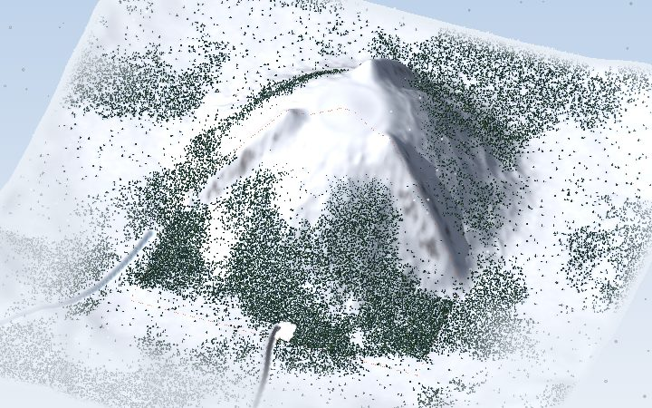
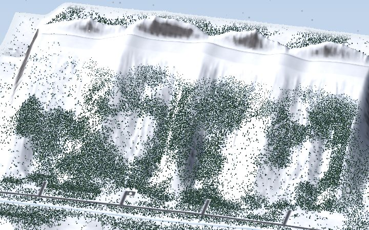
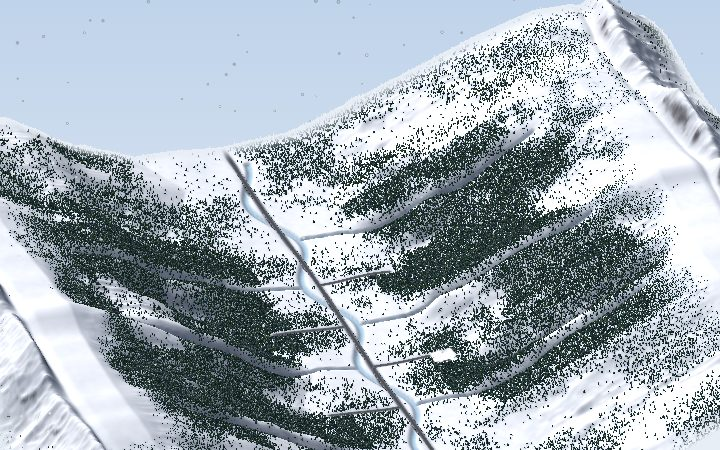

Start with an untouched mountain and build it into a ski resort: cut trails, string chairlifts up the slopes, build lodges, shops and parking, make snow and run the resort through a season of weather. Mountain Mogul runs in your browser on a computer, tablet or phone. Turn on JavaScript to play.
Same settings, different mountain. Every design has a code you can share.
Start with an untouched mountain. Build it into a ski resort.



To rename a resort or choose whether it’s public, open that mountain and come back here.